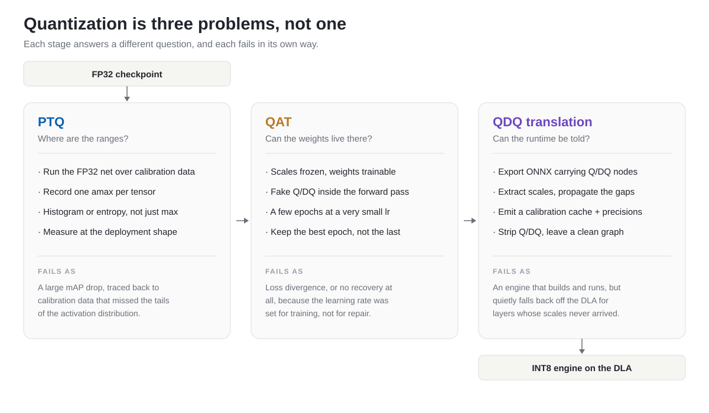

Quantization Is Three Problems, Not One
Taking a detector to INT8 looks like one task with one switch. It is three tasks with three switches, and they fail in ways that look identical from the outside: the numbers get worse.
The stated goal is simple enough. A YOLO-class detector runs in FP32 on a Jetson or Drive-class board and does not hit the frame budget. INT8 on the deep learning accelerator promises the throughput, at a fraction of the power, on a unit that is otherwise sitting idle while the GPU is busy. The accuracy cost is supposed to be small.
What usually happens instead is that mAP drops by more than the project can absorb, and the debugging session that follows has no obvious place to start. Calibration data, quantizer placement, learning rate, ONNX opset, and TensorRT layer assignment are all plausible culprits, and they all produce the same symptom.

One pipeline, three separable problems. The failure modes are what distinguish them, not the tooling.
What INT8 actually asks of a network
An INT8 tensor stores 256 levels. Mapping a float tensor onto them requires exactly one number per tensor — a scale, derived from the largest magnitude the tensor is expected to take:
scale = amax / 127 # symmetric signed INT8
q = round(x / scale) # clamped to [-128, 127]
x' = q * scale # what the network actually sees
Everything downstream is a consequence of that one number. Set
amax too high and the levels are spent on a range the
tensor never occupies, so small activations collapse into the same few
integers. Set it too low and the tail of the distribution is clipped,
which is exactly where a detector keeps its confident, high-response
activations. The whole discipline is choosing that number well, and
then making sure the number survives the trip to the deployment
runtime.
During PTQ and QAT the quantization is fake: values are rounded to the INT8 grid and immediately converted back to float, so the arithmetic still runs in FP32 but the network experiences the precision loss. Every quantized layer gets two of these — one on its input activations, one on its weights.
PTQ: calibration is a measurement, so measure the right thing
Post-training quantization replaces Conv2d and
Linear with quantized equivalents, runs the network over a
few hundred batches, and records the range each tensor occupies. No
gradients, no labels, minutes rather than hours.
Three things decide whether the resulting numbers are any good.
The estimator. Tracking a running max is the fast
default and the wrong one. A single outlier batch stretches
amax permanently and every subsequent tensor gets fewer
usable levels. Histogram calibration accumulates the distribution and
picks a clipping point that minimizes information loss, which is worth
the extra calibration time in essentially every case.
The data. Calibration is a sample-based estimate of a distribution's tails, which means it inherits every bias in the sample. Calibrating on a few hundred easy daytime frames and deploying at dusk produces activations the scales were never sized for. Use the training distribution, not a convenient slice of it.
The shape. This one costs people the most time. Calibrate at the resolution and aspect ratio you will actually deploy — if the engine runs at 544×960, calibrate at 544×960, with rectangular letterboxing on and augmentation off. Activation statistics depend on input scale, and calibrating a square 640 model for a wide deployment shape means measuring a distribution the deployed network never sees.
Fusing batch norm into the preceding convolution before calibrating is also worth doing when the target is the DLA. It is the graph the engine will build anyway, and calibrating the unfused graph measures ranges for tensors that will not exist at inference.
Diagnostic: if PTQ alone lands within a point or two of FP32, the ranges are fine and QAT will buy you very little. If it collapses, do not reach for QAT — fix the calibration set first. QAT cannot repair a badly estimated range; it inherits the scales.
QAT: freeze the scales, move the weights
Quantization-aware training starts from the calibrated checkpoint and fine-tunes with fake quantization live in the forward pass. The gradients flow through the rounding operation via a straight-through estimator, so the optimizer sees the loss the quantized network actually incurs and can move weights away from configurations that round badly.
The important asymmetry: the scales stay frozen and the weights move. QAT is not a second attempt at calibration. It accepts the ranges PTQ measured and finds weights that fit inside them.
That reframing sets the hyperparameters. This is repair, not training,
so it runs for a handful of epochs at a learning rate one to two orders
of magnitude below the original — 1e-5 is a reasonable
starting point. A warmup-and-decay schedule around that peak helps the
weights migrate into the quantized ranges without a shock. Anything
larger and the weights wander far enough from the distribution the
scales were measured on that the frozen scales become wrong, which
shows up as loss divergence a few hundred steps in.
The counterintuitive part is augmentation. PTQ and QAT want opposite data loaders:
# PTQ — measure the deployment distribution
calib_loader = create_loader(imgsz=(544, 960), rect=True, augment=False)
# QAT — train, so train like training
qat_loader = create_loader(imgsz=960, rect=False, augment=True)Calibration is a measurement, so it should see the deployment distribution undisturbed. Fine-tuning is training, so it wants the diversity that made the FP32 model good in the first place — mosaic included, which forces square inputs. The two stages disagree because they are doing different things, and copying the calibration loader into the QAT stage quietly costs small-object recall.
Two operational details are worth hard-coding into whatever script you use. Evaluate every epoch and keep the best checkpoint rather than the last — QAT is not monotonic, and epoch 0 is usually a dip while the weights reorganize. And log the FP32, PTQ, and per-epoch QAT numbers in one place, because the shape of that curve is your primary diagnostic:
| What the curve does | What it means |
|---|---|
| Dips at QAT0, then climbs past PTQ | Working as intended. Let it run. |
| Flat at the PTQ value for every epoch | The learning rate is too small, or the loss is not reaching the layers that matter. |
| Climbs, then falls away | Learning rate too high; the weights have drifted off the frozen scales. |
| Never approaches FP32 | A range problem wearing a training costume. Go back to calibration. |
QDQ translation: the stage nobody writes about
At this point there is a PyTorch checkpoint whose quantizers hold good scales, and none of it is portable. The scales live in framework-specific modules. TensorRT does not read them.
Exporting to ONNX preserves the information as explicit
QuantizeLinear and DequantizeLinear node
pairs wrapped around each quantized operation. That is a faithful
record of the fake quantization, and it is not what a TensorRT engine
builder wants for a DLA target. The translation step reads those pairs,
extracts the scales into a calibration cache the builder consumes
directly, and strips the Q/DQ nodes back out, leaving a clean graph
plus a table of ranges.
Three things make this less mechanical than it sounds.
Coverage gaps. Not every tensor in the graph had a quantizer attached to it. Concat, Add, MaxPool, Reshape and friends sit between quantized convolutions carrying tensors with no recorded range. Every one of those gaps is a layer TensorRT cannot run in INT8, so it falls back to a higher precision and, on a DLA target, often falls off the accelerator entirely. Propagating scales across these operations — a concat output takes the widest of its inputs, an elementwise add takes the wider of its two, a pooling or reshape passes its input through — closes most of the gaps, and repeating the pass a few times closes the long chains that need several hops to resolve.
Per-channel weights. One scale for an entire
convolution kernel is a poor fit when output channels have genuinely
different magnitudes, and in a detector's head they do. One scale per
output channel costs nothing at inference and reliably recovers
accuracy that per-tensor quantization gives away. It requires ONNX
opset 13 or later for the axis attribute on QuantizeLinear;
in practice, export at a recent opset and stop thinking about it.
Deliberate fallbacks. Some layers should not be INT8 — typically the first convolution, the detection head outputs, and anything with a pathological dynamic range. The translation step is where that decision gets recorded, as an explicit per-layer precision list handed to the builder. Making it explicit is the point: an intentional FP16 layer and an accidental one perform the same and mean very different things.
The stage's output is a set of artifacts rather than a model: a clean ONNX graph, a calibration cache, a precision configuration, and the layer-precision arguments for the builder.
trtexec --onnx=model_clean.onnx \
--int8 \
--calib=int8_calib_cache \
--useDLA=1 \
--allowGPUFallback=1 \
--saveEngine=model.engine
--allowGPUFallback is doing quiet work in that command.
Without it the build fails when a layer cannot run on the accelerator;
with it, the build succeeds and the layer moves to the GPU. Both
outcomes are useful, and the second one is only useful if you read the
build log. An engine that builds is not evidence that it built the way
you intended.
Designing the network for the accelerator
The DLA is fixed-function hardware with an opinion about which patterns it can fuse, and that opinion reaches back into the model definition. Two examples from the same codebase this came out of.
Activation choice. SiLU is x · σ(x): a
sigmoid and an elementwise multiply, where the two operands have quite
different ranges and need separate quantizers to be represented well.
LeakyReLU is a single monotonic piecewise-linear operation that maps
onto the hardware directly. Swapping SiLU for LeakyReLU costs a little
FP32 accuracy and buys a substantially cleaner INT8 graph — a trade
that is usually worth it and almost never worth it on a GPU target.
Quantizers on non-convolutional ops. The default is to quantize only convolutions and linear layers. Attaching quantizers to concatenations and activations as well produces more Q/DQ nodes than a GPU deployment needs, but it gives the translation step a measured range for every tensor rather than an inferred one, which is what keeps layers resident on the accelerator.
Both changes make the FP32 model marginally worse and the deployed model meaningfully better. That trade only makes sense if the target is decided before training starts, which is the real argument for treating quantization as an architecture constraint rather than a post-processing step.
Locating the stage that broke
Because the three stages fail identically from the outside, the useful work is in cheap checks that isolate them. In rough order of how often they find something:
- Count quantizers, then count calibrated quantizers. If the second number is smaller, some module was skipped by the replacement policy and is silently running in float. This is a two-line check and it catches a surprising share of "why is INT8 slow" questions.
- Read the FP32 → PTQ → QAT progression as three numbers. The gap that is largest tells you which stage owns the problem.
- Run a sensitivity sweep. Disable quantization one layer at a time and measure mAP. A layer whose exclusion recovers most of the loss is the layer to put on the fallback list — this is how the precision configuration should be decided, not by intuition.
- Count Q/DQ nodes in the exported ONNX. Compare against the quantizer count from the checkpoint. A large mismatch means the export dropped quantization the training stage thought it had.
- Read the TensorRT build log for layer assignment. The engine will tell you which layers landed on the DLA and which fell back. Every fallback that was not on your list is a scale that never made it through translation.
When to stop early
The full pipeline is not always the right amount of work. PTQ alone is minutes and often sufficient — if it lands close enough to FP32, the ranges were well-behaved and there is nothing for QAT to repair. QAT earns its cost when PTQ shows a real gap and the calibration set has already been ruled out as the cause.
QDQ translation, unlike the other two, is not optional and not a tuning knob. It is the step where the work becomes an engine. It is also the step most likely to be treated as a build detail and handed to whoever is free, which is why so many INT8 deployments end up running two-thirds of their layers somewhere other than where the design intended.
Written from a YOLOv5 INT8 deployment targeting NVIDIA DLA, using NVIDIA's PyTorch quantization toolkit for PTQ and QAT and onnx-graphsurgeon for the translation stage. The framing generalizes past YOLO; the specific numbers do not — measure your own.